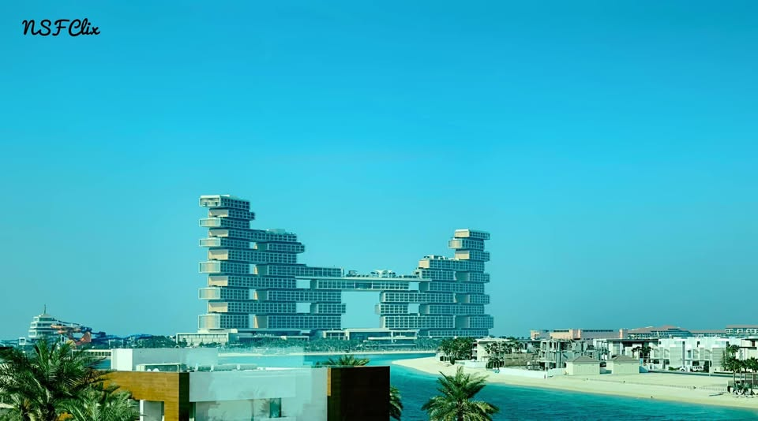
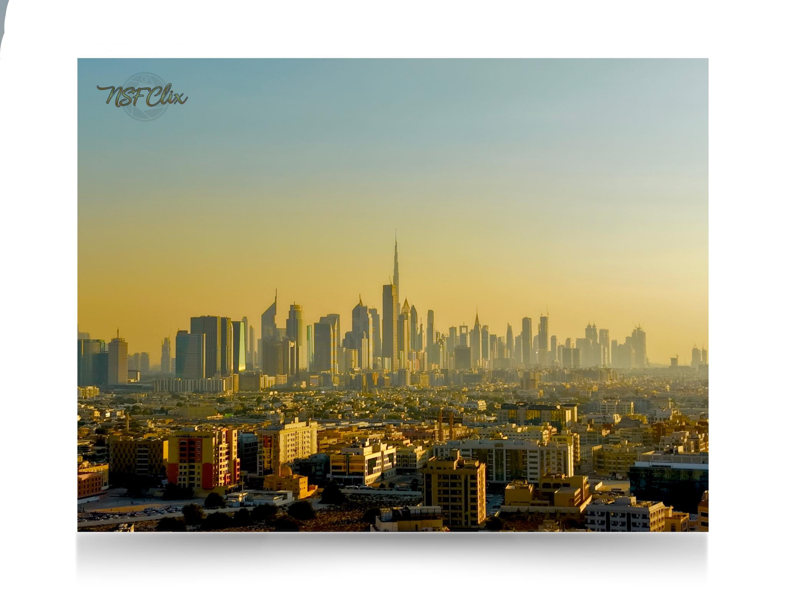
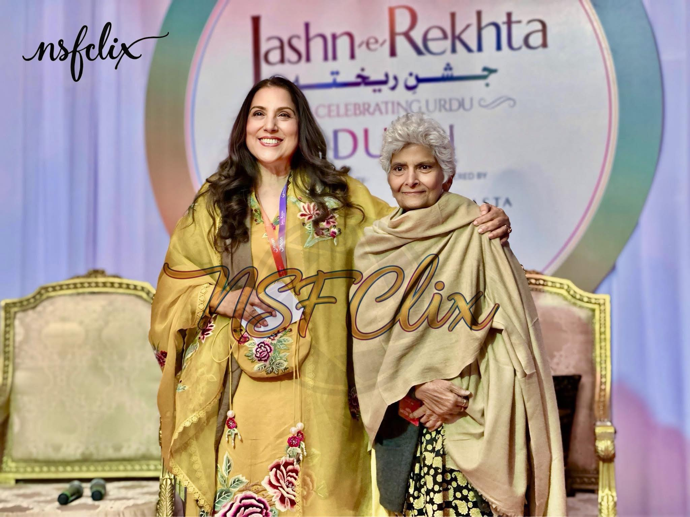
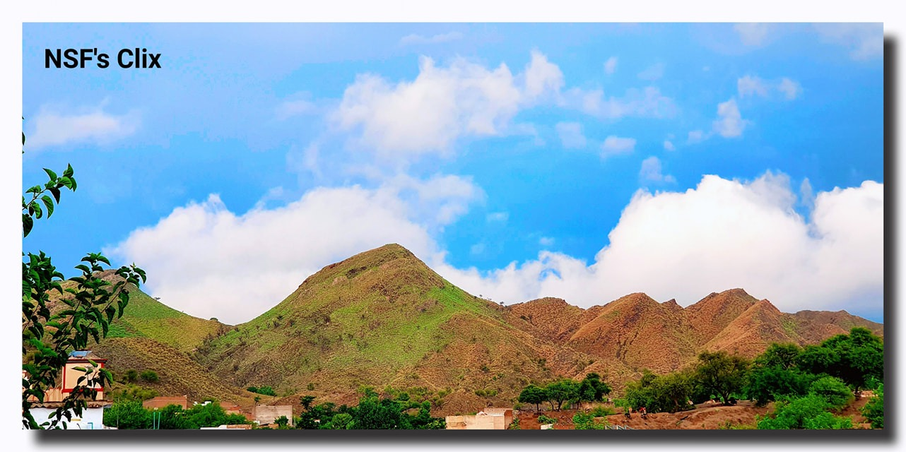
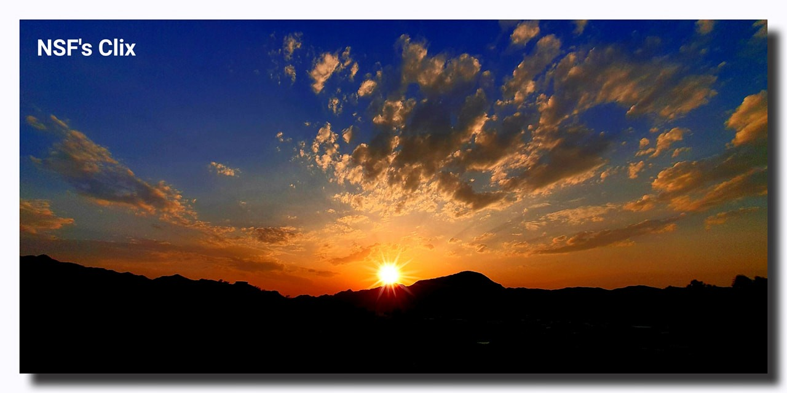
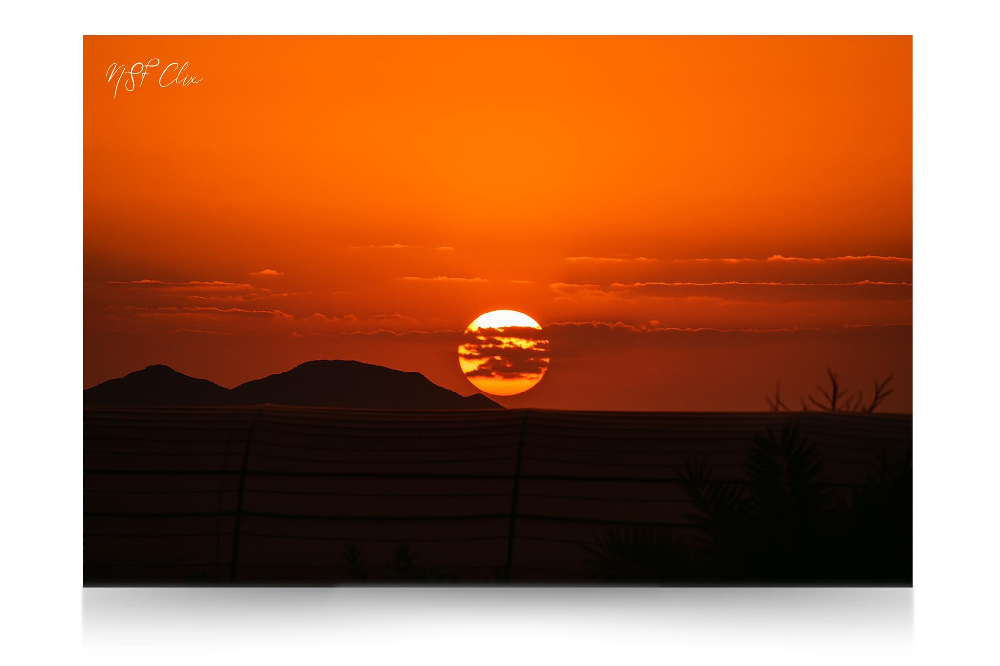
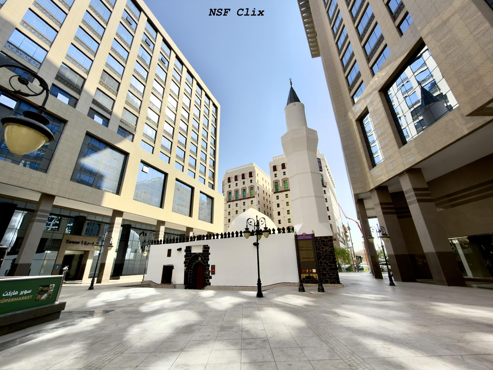
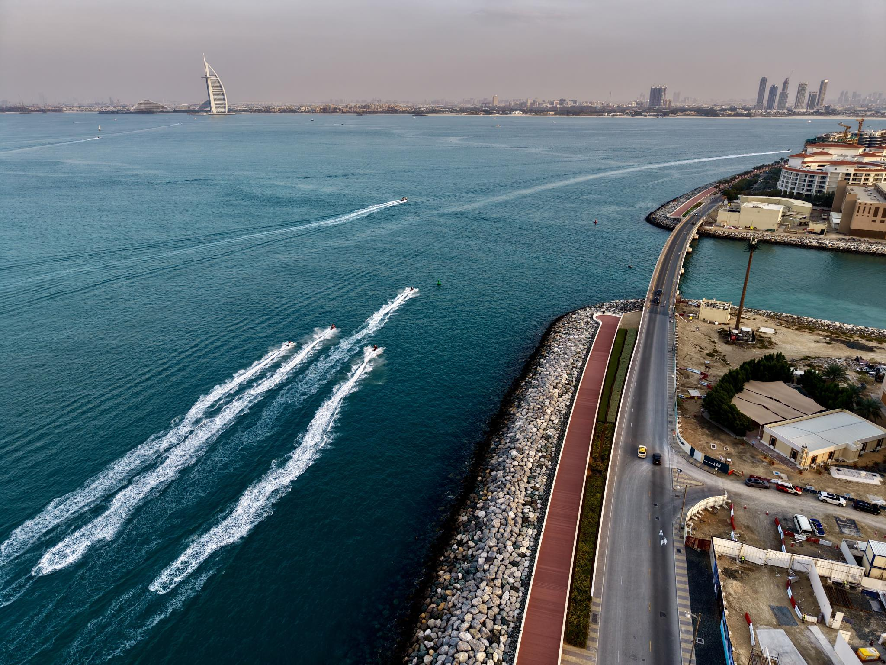
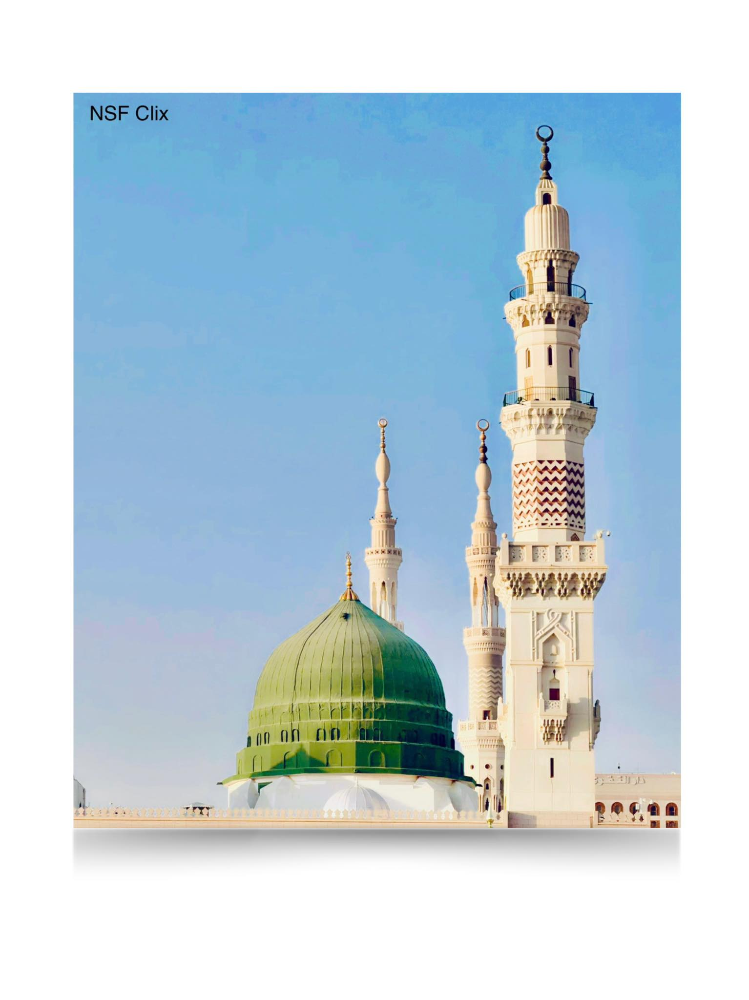
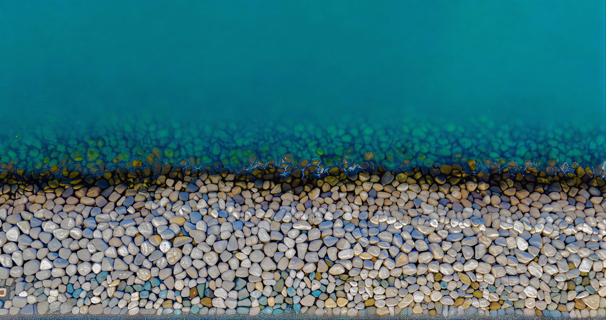

Palm Jumeirah, Dubai, UAE
Captured from the elevated track of the Dubai Monorail, this photograph frames the architectural marvel of Atlantis The Royal. The stacked geometric design appears almost sculptural against the sky, reflecting Dubai’s ambition to redefine luxury hospitality through bold architecture.

Dubai, United Arab Emirates
Aerial perspectives transform cities into patterns and textures. From above, Dubai’s skyline unfolds like a futuristic canvas of steel and glass where architecture rises from the desert with dramatic symmetry.

Dubai Cultural Festival
A memorable cultural moment captured during the celebrated Urdu literary festival Jashn-e-Rekhta in Dubai. The event brought together renowned intellectuals including Samina Peerzada and Arfa Syeda Zehra, celebrating poetry, language and cultural heritage.

Khawrai Village, KPK, Pakistan
A peaceful daytime view of Khawrai village surrounded by the rolling hills of Khyber Pakhtunkhwa. The photograph reflects the calm rhythm of rural life where nature and community exist in quiet harmony.

KPK, Pakistan
As the sun descends behind the mountains, warm orange light spreads across the landscape of Khawrai. The fading daylight softens the terrain and creates a tranquil cinematic moment.

Khaybar, Saudi Arabia
Taken near the historic Khaybar Fort, the sunset bathes the surrounding desert landscape in golden tones. The ancient region holds deep historical significance while offering breathtaking natural scenery.

Madinah Munawwarah, Saudi Arabia
A quiet street view of Masjid Umar Bin Al-Khattab in Madinah. The modest structure carries deep historical and spiritual meaning within the city of the Prophet ﷺ.

Dubai, United Arab Emirates
From above, the iconic palm-shaped island reveals its precise engineering and breathtaking symmetry extending into the Arabian Gulf.

Masjid an-Nabawi, Madinah
A sacred moment captured within Masjid an-Nabawi where the blessed resting place of Prophet Muhammad ﷺ lies. The atmosphere is filled with reverence, peace and spiritual reflection.

Palm Jumeirah, Dubai
Seen from above, turquoise water drifts into a shore of time-worn pebbles. The meeting feels deliberate and serene, a quiet dialogue of color and texture where nature reveals its refined order and meditative balance.
NSF Clix is the photography portfolio of Nadeem Shahzad Fida. The project focuses on documenting architecture, landscapes, culture and aerial perspectives across the Middle East and South Asia. Through careful composition and storytelling, each photograph captures a moment of place, atmosphere and emotion.
For collaborations, licensing inquiries, prints, or photography assignments, feel free to reach out through the following channels.
Email:
nadeemshahzadfida@outlook.com
nadeemshahzadfida@gmail.com
Mobile (UAE):
+971 55 921 6280
WhatsApp:
+92 333 900 4564